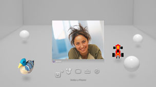

친구 > 음성/화상 대화하기 > 음성/화상 대화 시작/종료하기
음성/화상 대화 시작/종료하기
이 기능을 사용하려면 시스템 소프트웨어를 업데이트해야하는 경우가 있습니다.
친구 리스트에 있는 상대방과 음성/화상 대화를 할 수 있습니다. 음성 대화를 하려면 별매의 음성 입출력 기기(헤드셋 등)가 필요합니다. 화상 대화를 하려면 음성 입출력 기기와 별매의 USB 카메라가 필요합니다.
음성/화상 대화 시작하기
1. |
|
|---|---|
2. |
|
3. |
화면상의 제어판에서 |
4. |
메시지를 입력한 다음 [보내기]를 선택합니다.  상대가 참가하면 상대의 이미지가 표시되고 음성/화상 대화를 시작할 수 있습니다. |
 (친구)에서
(친구)에서  (새로운 대화 시작하기)를 선택합니다.
(새로운 대화 시작하기)를 선택합니다. (음성/영상 대화)를 선택합니다.
(음성/영상 대화)를 선택합니다.
 (친구 초대)를 선택합니다.
(친구 초대)를 선택합니다.알아두기
- PS3™는 음성/화상 대화에 대응합니다. 대화 기능에 대응하는 게임을 플레이하는 경우의 조작 방법에 대해서는 소프트웨어 설명서를 참조해 주십시오.
- 대화하려면 PSNSM에 로그인해 두어야 합니다.
- 복수의 친구를 초대할 수 있으나, 대화방에 아바타가 표시되는 것은 친구를 선택하는 화면에서 체크한 순으로 5명까지입니다.
- 대화방에는 최대 6명이 참가할 수 있습니다.
- 대화의 이용이 제한된 경우에는 음성/화상 대화 기능을 사용할 수 없습니다. 사용연령제한 기능에 대한 상세한 사항은 [XMB™에 대하여] > [사용연령제한 기능 사용하기]를 참조해 주십시오.
- PS3™에서는 USB 헤드셋/Bluetooth® 헤드셋/EyeToy™ USB 카메라/PlayStation®Eye/USB 비디오 클래스에 대응하는 USB 카메라를 사용할 수 있습니다.
- USB 허브를 사용하여 USB 카메라를 연결하는 경우에는 USB 2.0에 대응하는 허브를 사용해 주십시오. USB 2.0에 대응하지 않는 허브에서는 이미지가 흐리거나 표시되지 않는 경우가 있습니다.
- 대응하는 주변기기의 종류 및 사용 방법에 대해서는 기기 판매 업체에 문의해 주십시오.
대화방 나가기(음성/화상 대화 종료하기)
음성/화상 대화중에 화면상의 제어판에서  (나가기)를 선택합니다.
(나가기)를 선택합니다.
알아두기
음성/화상 대화를 시작한 사람이 나가면 대화방이 종료됩니다.